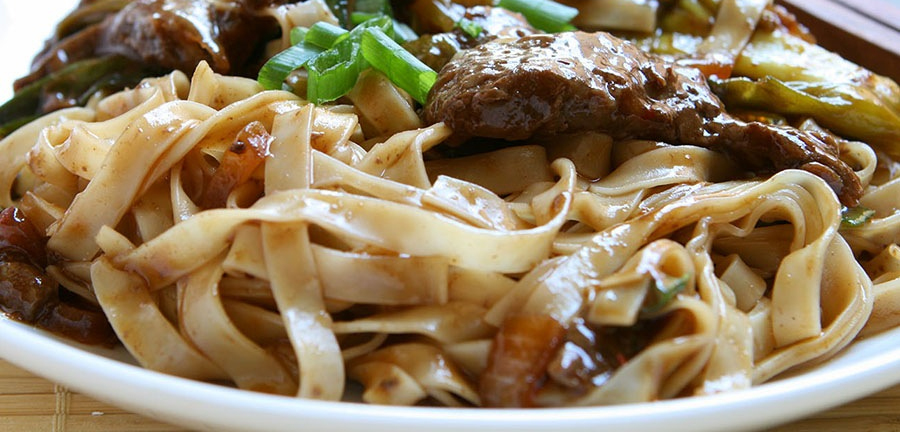

Илчлэг ихтэй хоол хүнс, хөдөлгөөний хомсдол таргалалтыг үүсгэдэг
Сүүлийн үед Монгол хүний амьрах дадал зуршил, зан үйлд ихээхэн өөрчлөлт орсон. Энэ нь хөдөлгөөний хомсдол, илчлэг ихтэй хоол хүнсний хэрэглээ, стресс, таргалалт зэрэг халдварт бус өвчлөлийг нэмэгдүүлэх гол шалтгаан болдог. Улмаар хүний бие илчлэг хуримтлуулах агуулах болон хувирч байгаа юм. Яагаад гэвэл хүн хөдөлгөөн хийж тэрхүү илчлэгийг шатааж энерги үүсгэж шатааж зарцуулдаг. Зүрхний цохилт ба амьгалын тоо олшрох, хөлс гаргах хэмжээний идэвхитэй дасгал хөдөлгөөн илүүтэй илчлэгийг шатаана. Хэрвээ хөдөлгөөний хийхгүй бол илчлэг энерги болж задарч зарцуулагдаж чадахгүй хүний биед хуримтлагдана гэсэн үг. Өөрөөр хэлбэл арьсан доорх өөхөн эд болон хувирч таргалалт үүсдэг.
Хотжилт, стресс, уламжлалт хоол хүнсний зүйл илчлэг их агуулсан хүнсний бүтээгдэхүүний хэрэглээг нэмэгдүүлэх шалтгаан байж болох юм. Илчлэг ихтэй хоол хүнс нь хоол боловсруулах замын тусламжтайгаар энерги үүсгэх нэгж болтлоо задарч цусанд шимэгддэг. Дээрх шалтгааны улмаас цусанд энерги үүсгэх нэгж болох өөх тос, нүүрс ус ихэвчлэн хуримтлагдаж, таргалалт үүсэх үндсэн шалтгаан болно. Хэрвээ орж байгаа илчлэгийн хэмжээг багасгах, зарцуулж шатаах хөдөлгөөн нэмэхгүйгээр турна гэдэг бол буруу ойлголт.
Ер нь зөв хооллолт гэдэг бол авбал зохих илчлэгийн хэмжээг мэдэж түүндээ тохируулж хоол хүнсийг хэрэглэх явдал юм. Хүний илчлэгийн хэмжээ насанд хүрсэн хүнд дунджаар 2000-2500 ккал байдаг.
Тиймд хоол хүнсний илчлэгээ тохируулж эрүүл, зөв хооллоорой.
